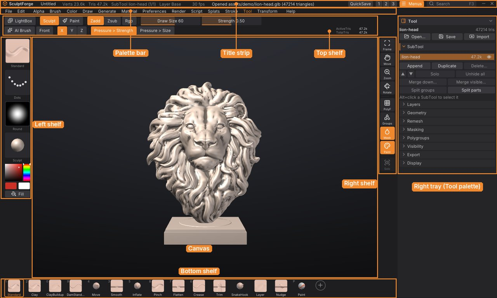

SculptForge User Guide
This guide explains every part of SculptForge, the free, open-source sculpting app for VFX, animation and games: how the interface is organised, how to sculpt, mask, paint (on vertices or textures) and manage SubTools, how to generate models with AI, and how to get your work into a game engine, a film pipeline, Blender or ZBrush. It is written for SculptForge 0.4.
You can read it inside SculptForge (Help > User Guide, or Shift+F1) or on the SculptForge website. If you're coming from ZBrush, start with Coming from ZBrush and keep the Glossary at hand: ZBrush's keys and gestures work as they are.


Getting started#
- Welcome to SculptForge
- What's new
- Coming from ZBrush
- Installing SculptForge
- The interface
- Navigating the view
Sculpting#
- Sculpting and brushes
- Brush Lab and sharing brushes
- Masking
- Polygroups and visibility
- SubTools
- Polypaint and materials
- Texture painting
- Sculpt layers and blend shapes
- Facial shapes and live face
- Subdivision levels
- Dynamic topology
- Moving, rotating and posing (Gizmo 3D)
- Subdivide, remesh, decimate and LODs
- Quad retopology and detail projection
AI and capture#
- Image and text to 3D
- Gaussian splats
- Scan an object into a splat
- From scan to sculptable mesh
- Phone capture and AR
Files and pipelines#
- Baking normal and displacement maps
- Exporting, Unreal and ZBrush
- Working with Blender
- Projects, autosave and QuickSave
- Scripting and automation
- SculptForge for studios
Reference#
Getting help#
- Hold Ctrl and point at any button for what it does, its shortcut and its script command.
- Press F1 for every shortcut and mouse gesture, and F3 to find any command by name.
- Ask questions and report problems on the issue tracker (Help > Report a problem).
SculptForge is free software under the GNU General Public License v3.0 or later. This guide is part of SculptForge and is covered by the same licence.